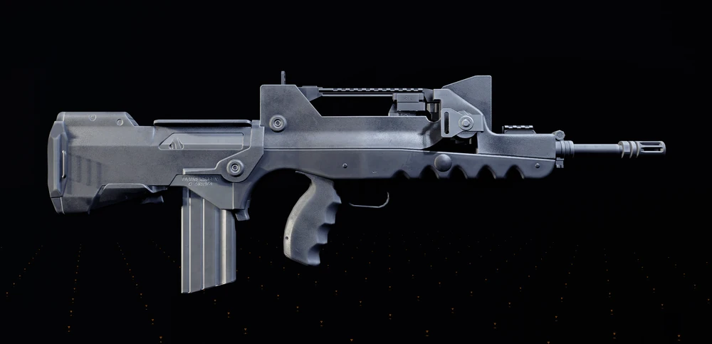

Utilidade em grupo
Build pensada para ajudar o time a manter ritmo, segurança e execução limpa das mecânicas.
Esta build é focada em suporte de grupo para a incursão Paradise Lost, trazendo estabilidade, utilidade e consistência para ajudar o time a executar mecânicas e manter o controle em lutas longas.
Build pensada para ajudar o time a manter ritmo, segurança e execução limpa das mecânicas.
Ajuda grupos casuais e intermediários a manter consistência em batalhas longas e encontros exigentes.
Não compete com uma build DPS dedicada; o valor dela está na utilidade e no suporte ao time.
Brilha quando o grupo precisa sobreviver melhor e manter o controle da luta sem perder ritmo.
Comparada a builds DPS, a build de suporte oferece mais estabilidade, utilidade e segurança para o grupo, mas abre mão de dano direto em favor de uma execução mais limpa e consistente da incursão.
A base dessa build gira em torno de utilidade para o grupo, conforto e sobrevivência suficiente para cumprir sua função na incursão sem comprometer o ritmo ofensivo da equipe.
Veja como a build se comporta na prática, com foco em equipamentos, atributos e atuação em grupo durante a incursão.

Aqui você vê a estrutura real da build de suporte dentro do jogo, pronta para atuar em grupo durante a incursão.

A build deve equilibrar utilidade, resistência suficiente e consistência para cumprir função durante toda a luta.
Aqui o foco é mostrar como a build ajuda no ritmo da incursão, sustentando o grupo e facilitando execução.
As armas aqui servem para complementar a função da build, ajudar na pressão do grupo e manter sua presença útil durante a incursão.
 PRINCIPAL
PRINCIPAL
 ALTERNATIVA
ALTERNATIVA

SUPORTEO objetivo não é ser o maior dano da sala. O valor desta build está em dar estabilidade ao grupo, facilitar mecânicas e reduzir a chance de erro em incursões mais difíceis.
A primeira skill deve reforçar sua função principal: ajudar o time, reduzir pressão ou facilitar posicionamento.
A segunda skill pode completar o papel da build, trazendo proteção, estabilidade ou apoio tático conforme o encontro.
A build de suporte para Paradise Lost não é sobre liderar o dano, mas sobre manter o grupo estável, vivo e capaz de executar a incursão com segurança.
Seu valor aumenta quando você entende o momento da luta e usa sua build para aliviar a pressão certa.
Priorize estabilidade coletiva, não números individuais. Em incursão, isso vale muito mais do que ego de dano.
Uma build de suporte morta não ajuda ninguém. Sua sobrevivência faz parte direta da função.
Respostas rápidas para dúvidas comuns sobre a build de suporte para Paradise Lost.
Não necessariamente. A ideia aqui é suporte ofensivo e utilidade, não apenas cura.
Ela foi pensada para a incursão, mas parte da lógica pode ser adaptada para outros conteúdos de grupo.
Sim. Inclusive o valor dela aumenta muito em grupos que ainda estão aprendendo as mecânicas.
Pode, mas essa build foi desenhada para render bem em grupo e perde parte do propósito fora dele.
A build de suporte Paradise Lost é ideal para quem gosta de utilidade, coordenação e impacto coletivo em conteúdo avançado.